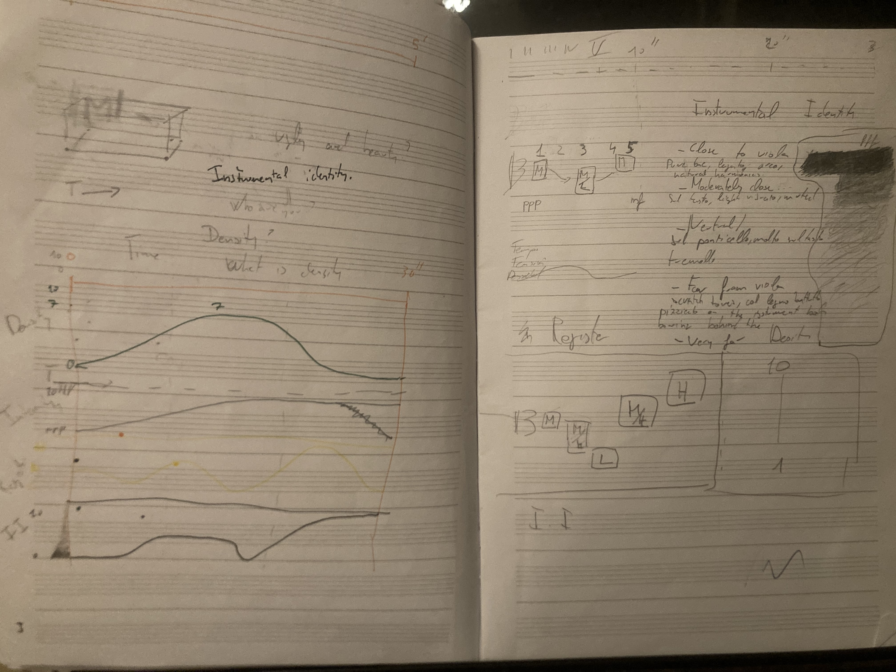

Mario Calzada develops composition projects in close dialogue with performers, ensembles, and institutions. His work moves between contemporary notation, improvisation, and collaborative processes.
If you are interested in commissioning a new work or developing a composition project together, please get in touch via the contact page or write to mariocalzadamusic@gmail.com.
Now in the oven
-
CoMA — New work
Premiere: June 2025 - Mario Calzada & Francesca Fantini — Duo book
- Composition for piano